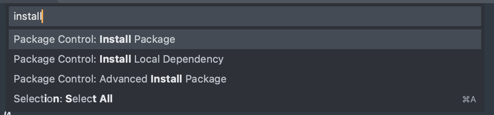
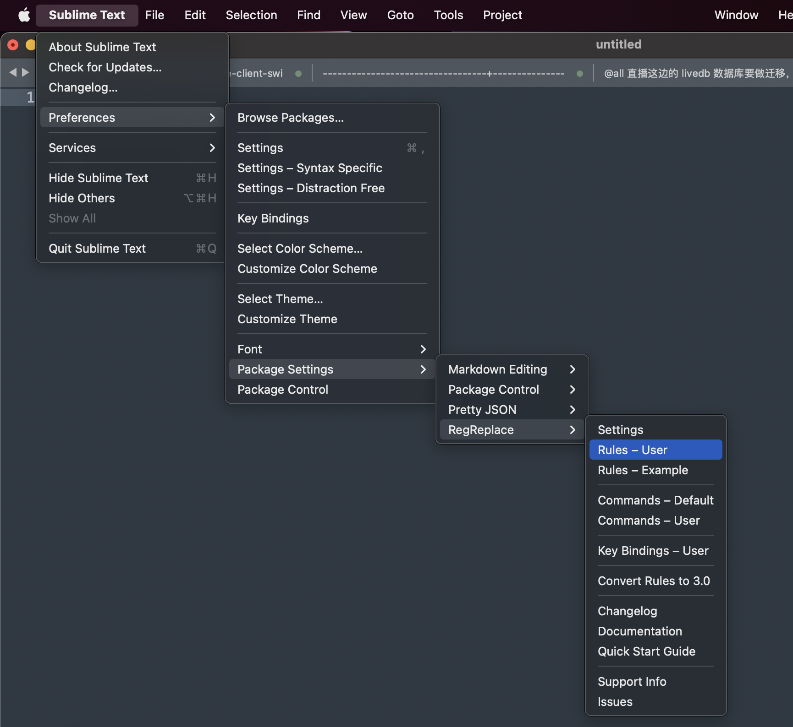
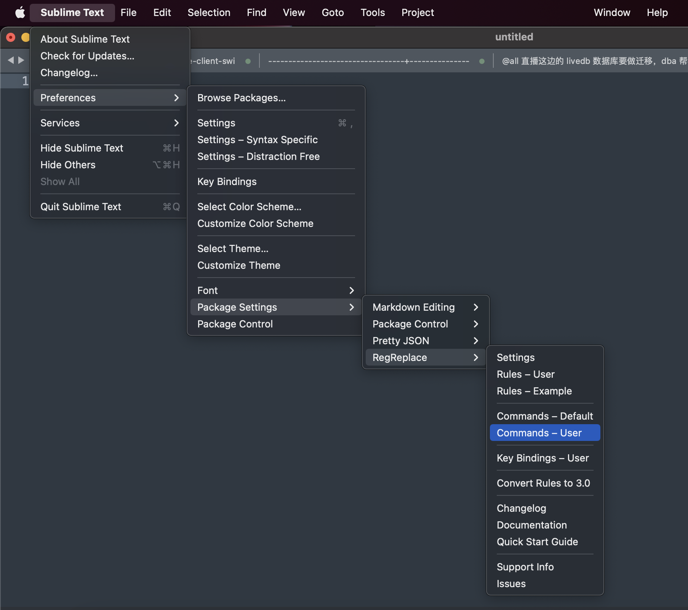
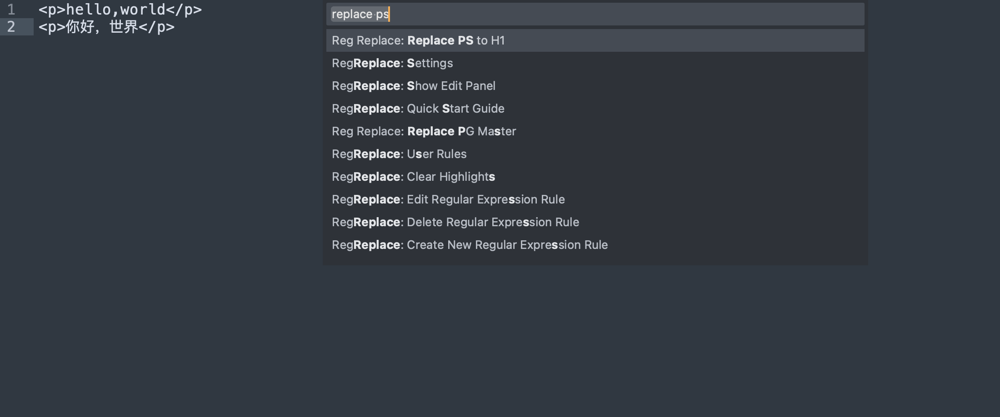

最近接到一个任务，配合 DBA 进行数据库升级，其实也没有多大难度，就是将依赖这个库的服务配置文件中的 URI、端口号替换下就好了，但我们这个库由于历史原因依赖的服务非常多，有 30 多个，而且每个服务的配置文件可能都有些许差别，还有就是有可能采用了不同的连接池，每个配置文件中即便是同一个字段也可能会声明在多处，修改时要处理多处。
前期我使用人肉查找替换的方式来做这件事，但由于要做两轮上线，第一轮是先将配置文件中的从库修改后上线，第二轮再修改主库配置。
由于工作太机械化，所以我准备发挥程序员的最大美德：懒惰。
先来分析下任务，其实就是把文本中命中的多个字段进行替换，如：
master.db.com替换为new.master.db.comusername替换为new_usernamepassword替换为new_password
普通的文本编辑器只支持单个字段的替换，上边这种替换多个的情况需要人工手动进行多次操作。
我在一开始准备写个 Python 脚本，把每个服务的配置文件复制下来保存成文件，然后用脚本遍历这些文件，将里边的内容替换掉。
分析后觉得有些用杀鸡用宰牛刀，不能拿着锤子找钉子，于是就想探索下 sublime 中有没有类似的插件可以实现这个需求。于是就找到了这个 RegReplace 插件。
下面我记录下我使用这个插件的过程：
这里避免数据敏感，我用个其他例子做为演示：将一个文档中的
<p>和</p>替换为<h1>和</h1>。
安装
command+shift+p，输入 install

从列表中搜索 RegReplace 回车安装就可以了。
自定义替换配置

编辑上边打开的配置文件，添加以下配置：
1 | { |
估计一眼就能看明白，replace_opening_ps 将 <p> 替换为 <h1>，replace_closing_ps 将 </p> 替换为 </h1>。
自定义触发命令

填入：
1 | [ |
也是一看就懂，这里不多解释了。
使用
- 准备一段文本：
1 | <p>hello,world</p> |
command+shift+p输入replace ps定位到我们配置的命令上，回车即可完成多处替换工作：

替换后的效果如下：
1 | <h1>hello,world</h1> |
现在时间凌晨 5.35 分，先写到这，准备去切换主库了。